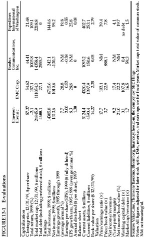

In the Air Force we have a rule: check six. A guy is flying along, looking in all directions, and feeling very safe. Another guy flies up behind him (at “6 o’clock”—“12 o’clock” is directly in front) and shoots. Most airplanes are shot down that way. Thinking that you’re safe is very dangerous! Somewhere, there’s a weakness you’ve got to find. You must always check six o’clock.
—U.S. Air Force Gen. Donald Kutyna
As Graham did, let’s compare and contrast four stocks, using their reported numbers as of December 31, 1999—a time that will enable us to view some of the most drastic extremes of valuation ever recorded in the stock market.
Emerson Electric Co. (ticker symbol: EMR) was founded in 1890 and is the only surviving member of Graham’s original quartet; it makes a wide array of products, including power tools, air-conditioning equipment, and electrical motors.
EMC Corp. (ticker symbol: EMC) dates back to 1979 and enables companies to automate the storage of electronic information over computer networks.
Expeditors International of Washington, Inc. (ticker symbol: EXPD), founded in Seattle in 1979, helps shippers organize and track the movement of goods around the world.
Exodus Communications, Inc. (ticker symbol: EXDS) hosts and manages websites for corporate customers, along with other Internet services; it first sold shares to the public in March 1998.
This table summarizes the price, performance, and valuation of these companies as of year-end 1999:

The most expensive of Graham’s four stocks, Emerson Electric, ended up as the cheapest in our updated group. With its base in Old Economy industries, Emerson looked boring in the late 1990s. (In the Internet Age, who cared about Emerson’s heavy-duty wet-dry vacuums?) The company’s shares went into suspended animation. In 1998 and 1999, Emerson’s stock lagged the S & P 500 index by a cumulative 49.7 percentage points, a miserable underperformance.
But that was Emerson the stock. What about Emerson the company? In 1999, Emerson sold $14.4 billion worth of goods and services, up nearly $1 billion from the year before. On those revenues Emerson earned $1.3 billion in net income, or 6.9% more than in 1998. Over the previous five years, earnings per share had risen at a robust average rate of 8.3%. Emerson’s dividend had more than doubled to $1.30 per share; book value had gone from $6.69 to $14.27 per share. According to Value Line, throughout the 1990s, Emerson’s net profit margin and return on capital—key measures of its efficiency as a business—had stayed robustly high, around 9% and 18% respectively. What’s more, Emerson had increased its earnings for 42 years in a row and had raised its dividend for 43 straight years—one of the longest runs of steady growth in American business. At year-end, Emerson’s stock was priced at 17.7 times the company’s net income per share. Like its power tools, Emerson was never flashy, but it was reliable—and showed no sign of overheating.
EMC Corp. was one of the best-performing stocks of the 1990s, rising—or should we say levitating?—more than 81,000%. If you had invested $10,000 in EMC’s stock at the beginning of 1990, you would have ended 1999 with just over $8.1 million. EMC’s shares returned 157.1% in 1999 alone—more than Emerson’s stock had gained in the eight years from 1992 through 1999 combined. EMC had never paid a dividend, instead retaining all its earnings “to provide funds for the continued growth of the company.” 1 At their December 31 price of $54.625, EMC’s shares were trading at 103 times the earnings the company would report for the full year—nearly six times the valuation level of Emerson’s stock.
What about EMC the business? Revenues grew 24% in 1999, rising to $6.7 billion. Its earnings per share soared to 92 cents from 61 cents the year before, a 51% increase. Over the five years ending in 1999, EMC’s earnings had risen at a sizzling annual rate of 28.8%. And, with everyone expecting the tidal wave of Internet commerce to keep rolling, the future looked even brighter. Throughout 1999, EMC’s chief executive repeatedly predicted that revenues would hit $10 billion by 2001—up from $5.4 billion in 1998. 2 That would require average annual growth of 23%, a monstrous rate of expansion for so big a company. But Wall Street’s analysts, and most investors, were sure EMC could do it. After all, over the previous five years, EMC had more than doubled its revenues and better than tripled its net income.
But from 1995 through 1999, according to Value Line, EMC’s net profit margin slid from 19.0% to 17.4%, while its return on capital dropped from 26.8% to 21%. Although still highly profitable, EMC was already slipping. And in October 1999, EMC acquired Data General Corp., which added roughly $1.1 billion to EMC’s revenues that year. Simply by subtracting the extra revenues brought in from Data General, we can see that the volume of EMC’s existing businesses grew from $5.4 billion in 1998 to just $5.6 billion in 1999, a rise of only 3.6%. In other words, EMC’s true growth rate was almost nil—even in a year when the scare over the “Y2K” computer bug had led many companies to spend record amounts on new technology. 3
Unlike EMC, Expeditors International hadn’t yet learned to levitate. Although the firm’s shares had risen 30% annually in the 1990s, much of that big gain had come at the very end, as the stock raced to a 109.1% return in 1999. The year before, Expeditors’ shares had gone up just 9.5%, trailing the S & P 500 index by more than 19 percentage points.
What about the business? Expeditors was growing expeditiously indeed: Since 1995, its revenues had risen at an average annual rate of 19.8%, nearly tripling over the period to finish 1999 at $1.4 billion. And earnings per share had grown by 25.8% annually, while dividends had risen at a 27% annual clip. Expeditors had no long-term debt, and its working capital had nearly doubled since 1995. According to Value Line, Expeditors’ book value per share had increased 129% and its return on capital had risen by more than one-third to 21%.
By any standard, Expeditors was a superb business. But the little freight-forwarding company, with its base in Seattle and much of its operations in Asia, was all-but-unknown on Wall Street. Only 32% of the shares were owned by institutional investors; in fact, Expeditors had only 8,500 shareholders. After doubling in 1999, the stock was priced at 39 times the net income Expeditors would earn for the year—no longer anywhere near cheap, but well below the vertiginous valuation of EMC.
By the end of 1999, Exodus Communications seemed to have taken its shareholders straight to the land of milk and honey. The stock soared 1,005.8% in 1999—enough to turn a $10,000 investment on January 1 into more than $110,000 by December 31. Wall Street’s leading Internet-stock analysts, including the hugely influential Henry Blodget of Merrill Lynch, were predicting that the stock would rise another 25% to 125% over the coming year.
And best of all, in the eyes of the online traders who gorged on Exodus’s gains, was the fact that the stock had split 2-for-1 three times during 1999. In a 2-for-1 stock split, a company doubles the number of its shares and halves their price—so a shareholder ends up owning twice as many shares, each priced at half the former level. What’s so great about that? Imagine that you handed me a dime, and I then gave you back two nickels and asked, “Don’t you feel richer now?” You would probably conclude either that I was an idiot, or that I had mistaken you for one. And yet, in 1999’s frenzy over dot-com stocks, online traders acted exactly as if two nickels were more valuable than one dime. In fact, just the news that a stock would be splitting 2-for-1 could instantly drive its shares up 20% or more.
Why? Because getting more shares makes people feel richer. Someone who bought 100 shares of Exodus in January watched them turn into 200 when the stock split in April; then those 200 turned into 400 in August; then the 400 became 800 in December. It was thrilling for these people to realize that they had gotten 700 more shares just for owning 100 in the first place. To them, that felt like “found money”—never mind that the price per share had been cut in half with each split. 4 In December, 1999, one elated Exodus shareholder, who went by the handle “givemeadollar,” exulted on an online message board: “I’m going to hold these shares until I’m 80, [because] after it splits hundreds of times over the next years, I’ll be close to becoming CEO.” 5
What about Exodus the business? Graham wouldn’t have touched it with a 10-foot pole and a haz-mat suit. Exodus’s revenues were exploding—growing from $52.7 million in 1998 to $242.1 million in 1999—but it lost $130.3 million on those revenues in 1999, nearly double its loss the year before. Exodus had $2.6 billion in total debt—and was so starved for cash that it borrowed $971 million in the month of December alone. According to Exodus’s annual report, that new borrowing would add more than $50 million to its interest payments in the coming year. The company started 1999 with $156 million in cash and, even after raising $1.3 billion in new financing, finished the year with a cash balance of $1 billion—meaning that its businesses had devoured more than $400 million in cash during 1999. How could such a company ever pay its debts?
But, of course, online traders were fixated on how far and fast the stock had risen, not on whether the company was healthy. “This stock,” bragged a trader using the screen name of “Launch_Pad 1999,” “will just continue climbing to infinity and beyond.” 6
The absurdity of Launch_Pad’s prediction—what is “beyond” infinity?—is the perfect reminder of one of Graham’s classic warnings. “Today’s investor,” Graham tells us,
is so concerned with anticipating the future that he is already paying handsomely for it in advance. Thus what he has projected with so much study and care may actually happen and still not bring him any profit. If it should fail to materialize to the degree expected he may in fact be faced with a serious temporary and perhaps even permanent loss.” 7
How did these four stocks perform after 1999?
Emerson Electric went on to gain 40.7% in 2000. Although the shares lost money in both 2001 and 2002, they nevertheless ended 2002 less than 4% below their final price of 1999.
EMC also rose in 2000, gaining 21.7%. But then the shares lost 79.4% in 2001 and another 54.3% in 2002. That left them 88% below their level at year-end 1999. What about the forecast of $10 billion in revenues by 2001? EMC finished that year with revenues of just $7.1 billion (and a net loss of $508 million).
Meanwhile, as if the bear market did not even exist, Expeditors International’s shares went on to gain 22.9% in 2000, 6.5% in 2001, and another 15.1% in 2002—finishing that year nearly 51% higher than their price at the end of 1999.
Exodus’s stock lost 55% in 2000 and 99.8% in 2001. On September 26, 2001, Exodus filed for Chapter 11 bankruptcy protection. Most of the company’s assets were bought by Cable & Wireless, the British telecommunications giant. Instead of delivering its shareholders to the promised land, Exodus left them exiled in the wilderness. As of early 2003, the last trade in Exodus’s stock was at one penny a share.